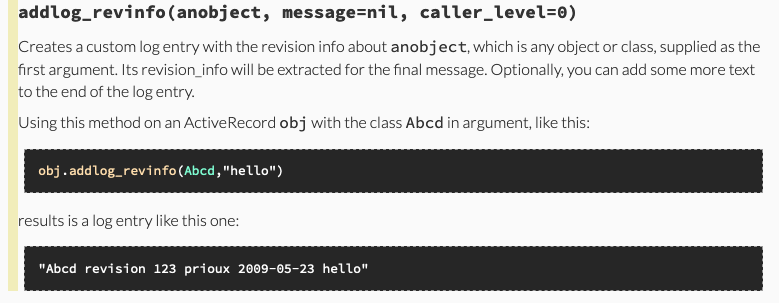
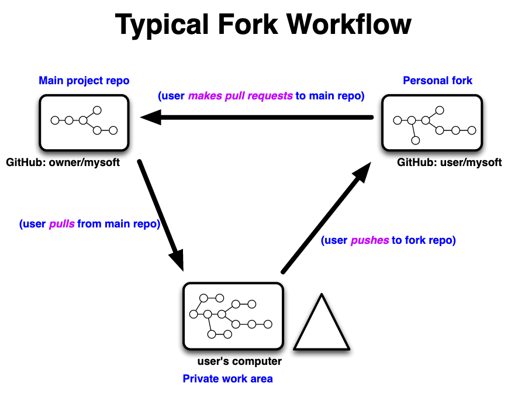

Developer Workshop
Pierre RiouxApril 2019
Prerequisites 1
Before we start, we should all have an operationalCBRAIN development installation.
It should contain at least:
- A functionning development, production and test environment
- A couple of Bourreaux: one local, one on ace-vh-2
- A few DataProviders: one browsable, one EnCB, one remote...
- This CBRAIN plugins: cbrain-plugins-neuro
Prerequisites 2
For the training session and demos, I strongly suggest you have:
- One browser window open on one of your screens
- Two terminal windows (or tabs) open on the other:
- One wide window with a small font for the server logs
- One wide window with a comfortable font for shell work
Workspace recommendations
- Use one shell for the rails server
- Clear the server's terminal window between requests (⌘-K on Macs)
- Use one shell for the console
- Do not exit them unless necessary!
- One browser window for an admin user (with tabs)
- Set .bashrc shortcuts to the main directories of the code base
- If you need normal and admin users within the same browser, use the browser's incognito or private mode for one of them
- Or use distinct browser (e.g. Safari+Firefox+Chrome, and each can have a private session!)
Example bashrc shortcuts
#------------------------------------------------------------
# CBRAIN Work Paths
#------------------------------------------------------------
cb=~/CBRAIN
p=$cb/BrainPortal
pl=$p/lib
ph=$p/app/helpers
pc=$p/app/controllers
pss=$p/public/stylesheets
pjs=$p/public/javascripts
pm=$p/app/models
pv=$p/app/views
pi=$p/config/initializers
The files
Two main subdirectories: BrainPortal/ and Bourreau/.Each is a Rails application.
Bourreau/... is mostly symbolic links.
- cd cbrain
- have a look at the files with ls
- check links in Bourreau/app/models/
- ask me about anything weird you see
Rails environments
Normally, three of those: development, production and test.Each can potentially connect to a distinct database.
- cd BrainPortal/config
- cat database.yml
- have a look at files there
Recommended for development work:
- development and production share the same DB
- test has its own DB
Rails core
Located under app/
Rails is a MVC framework, so you'll find
models/, views/ and controllers/.
- cd BrainPortal/app
- examine the models, views or controllers
- helpers/: view helpers
- assets/: static web assets (image, stylesheets etc)
- mailers/: 'models' for email messages
Initializers
Each initializer .rb file is sourced in alphabetical order.Some files are provided by Rails, some by CBRAIN.
added_core_extensions/ config_portal.rb.TEMPLATE new_framework_defaults.rb application_controller_renderer.rb cookies_serializer.rb rack_config.rb assets.rb filter_parameter_logging.rb session_store.rb backtrace_silencers.rb inflections.rb validation_portal.rb cbrain.rb initialize_console.rb wrap_parameters.rb cbrain_deprecation_tmp.rb listen_temp_monkeypatch.rb config_portal.rb mime_types.rb
- cd BrainPortal/config/initializers
- ls
- Examine session_store.rb or cbrain.rb
Bourreau differences
Most Bourreau code is identical to the Portal's:
- All models are the same (but with one more: bourreau_worker.rb)
- All libraries (in /lib) too
The main difference are:
- The bourreau has NO views, stylesheets, etc
- The bourreau has no database.yml
- The bourreau has only one controller: controls_controller.rb
- The boot process checks different things
- The CbrainTask subclasses each inherit different code
The Rails console 1
Your first stop for testing small pieces of Ruby code,and examining your system.
- Access to all Rails subsystems
- Extraordinary CBRAIN extensions (type cbhelp)
- rails console development
- rails console production
- rails console test # might not work
The Rails console 2
- do_log
- u = User.first
- no_log
- u = User.first
- do_log { Tool.all }
- cu
- current_user
- current_project
- cu User.last
- cp WorkGroup.last
The Rails console 3
fff is the friendly fast finder.It searches in many categories: files, tasks, users, groups, tools, etc.
If it finds a single record in a category, it sets a variable with a single letter name (e.g. @f for a file, @u for the user).
If it finds several records, its sets an array of results to a variable with two letters (e.g. @ff for many files, @uu for many user).
- fff 12
- fff "admin"
- fff "civet"
- fff :civet
The Rails console 4
Inspecting objects:
- User.all # shows CBRAIN's default tabular output
- u = User.last
- pv u
- tv u
- tv a: 1, b: 2
- table (1..5).map { |x| [x,x*x] }
pv works with Userfile, CbrainTask, User, Group, DataProvider, RemoteResource, Site and Tool ToolConfig.
tv works with anything that has .attributes or .to_h
The Rails console 5
plog prints the CBRAIN logs for an object.
- u = User.last
- plog u
- u.addlog("Hello world")
- plog u
The Rails console 6
CBRAIN view helpers can be invoked directly:
- pretty_size 124_235_334
- pretty_past_date 26462383.seconds.ago
- puts array_to_table [1,2,3,4,5,6,7], table_class: 'junk'
- edit_task_path(CbrainTask.first)
- puts user_select()
- x = "Jack & Jill"; puts h(x)
- y = x.html_safe; puts y; puts h(y)
- puts y.class; puts y.class.superclass
The Rails console 7
Admin utilities:
- do_log
- b=Bourreau.first
- online b
- offline b
- acttasks
- trans
- ibc
- A full Bourreau control interface, interactive
- ('q' to quit, btw)
The Rails console 8
For programmers: Entering an object
- self
- country # should crash
- u = User.first
- irb u # within IRB, there is an irb command
- self
- country
- new_record?
- attributes
- addlog "yep"
- puts getlog
- exit # to return to main
Console boot
C> CBRAIN System Checks starting, 2019-03-29 19:17:24 -0400
C> Ruby 2.4.1 on Rails 5.0.6, environment is set to 'development'
C> CBRAIN instance is named 'PID-51004'
C> Hostname is 'bianca.cbrain.mcgill.ca'
C> CBRAIN identified boot mode: console
(more messages...)
C> CBRAIN BrainPortal validation completed, 2019-03-29 19:17:28 -0400
Loading development environment (Rails 5.0.6)
C> CBRAIN Rails Console Initialization starting
Current user is now: admin
Current project is now: (nil)
Welcome the the CBRAIN Rails Console
To get a summary of the extra CBRAIN features, type 'cbhelp'.
Bianca :001 > █
Boot messages 1
C> CBRAIN System Checks starting, 2019-03-29 19:28:04 -0400 C> Ruby 2.4.1 on Rails 5.0.6, environment is set to 'development' C> CBRAIN instance is named 'PID-51216' C> Hostname is 'bianca.cbrain.mcgill.ca' C> CBRAIN identified boot mode: console C> - Note: You can skip all CBRAIN validations by temporarily setting the C> environment variable 'CBRAIN_SKIP_VALIDATIONS' to '1'. C> Ensuring that this CBRAIN app is registered in the DB... C> - This CBRAIN app is named 'Bianca' and is registered. C> Ensuring that the Sys::ProcTable gem is operational... C> - All good. Found process name: ruby C> Setting time zone for application... C> - Time zone set to 'Eastern Time (US & Canada)'.
- Notice the version numbers at the top
- The instance name is no longer much used
- The app name is registered in config/config_portal.rb
Boot messages 2
C> Making sure we can track file revision numbers. C> - Revisions are fetched using: git C> Cleaning up old SyncStatus objects... C> - No SyncStatus objects are associated with obsolete resources. C> - No SyncStatus objects are associated with obsolete files. C> Checking to see if Data Provider cache is valid... C> Checking to see if Data Provider cache needs cleaning up... C> - Wiping old files in Data Provider cache (in background). C> Current application tag or revision: 5.1.1-4 C> Current Git branch: master
- Two ways to track revision numbers: git or a flatfile csv
- Consistency checks
- The DP cache wipe of old files are only for files that no longer even exist
- GIT info for making sure Rails boot within the proper codebase
Boot messages 3
C> CbrainTask::BidsAppHandler: Integrated CbrainTask::BIDSAppFMRIprep C> CbrainTask::BidsAppHandler: Integrated CbrainTask::BIDSAppFreesurferReconAll C> CbrainTask::BidsAppHandler: Integrated CbrainTask::BIDSExample2 C> CbrainTask::BidsAppHandler: Integrated CbrainTask::ExampleGoodbidsapp ... C> Integrated CbrainTask::BEst from descriptor 'best_toolbox.json' C> Integrated CbrainTask::NiakFmriPreprocess from descriptor 'FmriPreprocess.json' C> Integrated CbrainTask::FslAnat from descriptor 'fsl_anat.json' C> Integrated CbrainTask::FslBet from descriptor 'fsl_bet.json' C> Integrated CbrainTask::FslEddyCudaForHcp from descriptor 'fsl_eddy_hcp_cuda.json' C> Integrated CbrainTask::FslFast from descriptor 'fsl_fast.json' ...
- One line per Boutiques descriptor integrated
- Two integration modes however:
- Descriptors integrated by the standard task BidsAppHandler
- Descriptors integrated by the CBRAIN integrator
Boot messages 4
C> Checking for pending migrations... C> Checking if the BrainPortal database needs a sanity check... C> Making sure we have a SSH agent to provide our credentials... C> - Found existing agent: PID=13587 SOCK=/Users/prioux/CBRAIN/BrainPortal/tmp/ sockets/ssh-agent.portal.sock C> Making sure we have a CBRAIN key for the agent... C> - Added identity to agent from file: '/Users/prioux/.ssh/id_cbrain_portal'. C> Starting automatic Agent Locker in background... C> - Locker already being created. (/Users/prioux/CBRAIN/BrainPortal/tmp/AgentLocker.lock) C> CBRAIN BrainPortal validation completed, 2019-03-29 19:28:09 -0400
- Sanity checks are needed only once, each time portal_sanity_checks.rb is changed
- The SSH agent is started once and is persistent across CBRAIN reboots
- Same thing with the SshAgentLocker
- State information in kept under BrainPortal/tmp/{pids|sockets}
Starting the server
- We use puma, a Ruby server with compiled C code
- You need to specify the rails environment and the local port number
- Defaults are, respectively, development and 3000
- The server can be started in two modes:
- Using the rails wrapper
- Directly invoking puma
Standard server launch
Logs are sent to screen, and also captured in files:- cd BrainPortal
- rails server puma -e development -p 3000
Alternative server launch
No Rails logs, control of parallelism:- cd BrainPortal
- puma -e development -p 3000
- puma -h
Both methods support -d to demonize.
Process names
The Ruby processes for the servers, consoles and Bourreauxgenerally rename themselves. Also, ssh master connections
often include a dummy SendEnv= option that is only there
to help identify which service they connect to.
Example of ps process names you could see:
- CBRAIN Console BrainPortal MyName PID-83539
- CBRAIN Server BrainPortal MyName
- CBRAIN Server Bourreau MyName 1234
- ssh -q -n -N -x -M -o SendEnv=Bourreau_Beluga -p 22 -A ...
Rails 'development' environment 1
- This is what you mostly should use on your desktop
- It's meant to provide near-live feedback
- Code files are monitored and reloaded between each request
- Applies to everything in app/
- Crashes are handled with stack traces in browser
- Emails are not really sent
- Slower than 'production' environment
Rails 'development' environment 2
- cd to BrainPortal/app/views/users
- add some correct HTML code to show.html
- browse to My Account
- add incorrect code in BrainPortal/app/controllers/users_controller.rb in method def show
- refresh page
Rails 'production' environment 1
- Switch to this to enable production-specific code
- Code changed while running won't have any effect
- Crashes are handled with production-specific handlers
- Emails are sent if possible!
- Faster execution than 'development' environment
- Logs are much more simplified
- Many preparation steps need to be run:
- Need secret token for encrypting the cookies
- Assets must be precompiled
- Static assets server MIGHT have to be enabled!
Rails 'production' environment 2
- make sure your dev server is down
- cd to BrainPortal
- rails server puma -e production
- access My Account
- Internal error? Then set config/secrets.yml or env SECRET_KEY_BASE
- Assets missing? Run with env RAILS_SERVE_STATIC_FILES
- Assets incomplete? Run rake assets:precompile
- Change a stylesheet rule, see how it doesn't show up even after a restart
- Examine the logs too, see how cleaner they are?
Generating the local doc
All CBRAIN code is self-documenting using rdoc.
- cd {YOUR_CBRAIN_ROOT}
- bash script/make_local_doc.sh
- (wait, then cut-and-paste the URLs)
- (search for 'save_with_lo')
Coding style 1
- We use standard Ruby and Rails style, in general
- We have specific rules in the Wiki on GitHub
- We also require all methods that are visible to other programmers to have documentation in rdoc format
- Private methods and methods not meant to end up in the documentation need to be annotated with #:nodoc:
- Have a look at BrainPortal/lib/act_rec_log.rb
- Check the huge two documentation blocks before class ActRecLog
- The first is hidden, the second is shown
- Blank lines are critical!
Coding style 2
From BrainPortal/lib/act_rec_log.rb:
# Creates a custom log entry with the revision info about +anobject+,
# which is any object or class, supplied as the first argument. Its
# revision_info will be extracted for the final message.
#
# Using this method on an ActiveRecord +obj+ with the class +Abcd+
# in argument, like this:
#
# obj.addlog_revinfo(Abcd,"hello")
#
# results is a log entry like this one:
#
# "Abcd revision 123 prioux 2009-05-23 hello"
def addlog_revinfo(anobject, message=nil, caller_level=0)
# code not shown here
end
- Text with +word+ will be highlighted
- Text indented MORE than the first comment line are code blocks
- No blank lines must be between the comment and the def line!
Coding style 3
Generated doc appearance:
Migrations
- DB Migrations are managed by Rails
- They are stored in timestamped files in db/migrations/nnnn.rb
- The full schema in db/schema.rb is re-dumped after every change
- Migrations are rollback-able
- cd BrainPortal
- rails generate migration AddProvinceToUsers
- edit the new file
- add in method 'change':
add_column :users, :province, :string
- rails db:migrate
- check with the console:
- u = User.last
- u.province = 'QC'
- u.save
- tv u
- check db/schema.rb for changes; make sure only the province is added
- rails db:rollback
- if your installation is old: git checkout db/schema.rb
Rails sessions
- Single encrypted cookie
- Name: in BrainPortal/config/initializers/session_store.rb
- Content: a serialized hash table
- Shows up in Rails as method session with hash semantics
- Two important things in it:
- Key user_id: if exists, this user is logged in!
- Key session_id: a 40 digits hex identifier
- Cookie size limit: 4096 characters
- In your browser, find the cookie manager
- Find the cookie named BrainPortal5_Session associated with localhost
- It's a bunch of hex digits!
Cbrain sessions 1
- Added custom support for larger data
- Storage: ActiveRecord LargeSessionInfo
- One such record is created when the user logs in
- Main key is the session_id of Rails Session
- The utility hash is stored in column data, serialized
- Within the portal, it is accessible with method cbrain_session
- Access wrapper class: CbrainSession
Cbrain sessions 2
- (log out and log back in from the interface)
- In the console:
- LargeSessionInfo.all
- s = LargeSessionInfo.last
- tv s.data
- In the interface, go to the file manager and sort by a column
- In the console:
- s.reload; tv s.data
Debugging features
Several environment variables add debugging features:
- CBRAIN_SKIP_VALIDATIONS: affect boot process
- CBRAIN_DEBUG_SQL_SOURCE_LINES: trace source of SQL statement
- CBRAIN_DEBUG_TRACES: trace system() and popen() calls
- CBRAIN_BOUTIQUES_DUMPDIR and CBRAIN_BOUTIQUES_DUMPTASK: dump the template-generated Boutiques code for tasks
All these variables can be used both when
running the server or running the console.
CBRAIN_SKIP_VALIDATIONS
Use this when the boot process fails withinvalidation code and you want a minimal console.
Some validations are critical and cannot be
avoided, but all others will be skipped.
- rails console
- CBRAIN_SKIP_VALIDATIONS=1 rails console
CBRAIN_DEBUG_SQL_SOURCE_LINES
When this environment variable is set to a number N,the logs will show a stack trace of the last N Ruby
statements that led to issuing any SQL statements.
ActiveRecord internal methods are hidden, only code
from the CBRAIN side is shown.
- CBRAIN_DEBUG_SQL_SOURCE_LINES=3 rails console
- group_select(:z, groups: Group.all.to_a);1
- fff :hello
CBRAIN_DEBUG_TRACES
When this environment variable is set, the logs willshow the arguments used for system() and popen() calls.
- CBRAIN_DEBUG_TRACES=1 rails console
- system("touch .")
- IO.popen("uname -a") { |fh| puts fh.read }
CBRAIN_BOUTIQUES_DUMPDIR
When this environment variable is set to an existing directory,code generated by the Boutiques integrator will be dumped there.
- mkdir /tmp/dump
- CBRAIN_BOUTIQUES_DUMPDIR=/tmp/dump rails console
- examine the content of /tmp/dump now
If only a specific Boutiques task is of interest, its name (e.g. "FslBet")
can be specified in CBRAIN_BOUTIQUES_DUMPTASK
and only that task's code will be dumped.
Examining logs
The log/ directory under each Rails app containsmany useful logs. Their content is cumulative,
so consider erasing them from time to time.
- .../log/development.log
- .../log/production.log
- Bourreau/log/server_start.log # boot control script capture
They are mostly useful when running the server;
console statements are not logged there.
In development, the logs contain SQL statements that
are colored by type of action, and also include SQL time information.
Log examples
Group Load (2.3ms) SELECT `groups`.* FROM `groups` INNER JOIN `groups_users` ON `groups`.`id` = `groups_users`.`group_id` WHERE `groups_users`.`user_id` = 1 ORDER BY `groups`.`name` ASC EveryoneGroup Load (0.4ms) SELECT `groups`.* FROM `groups` WHERE `groups`.`type` IN ('EveryoneGroup') AND `groups`.`name` = 'everyone' LIMIT 1 Tool Load (0.6ms) SELECT `tools`.* FROM `tools` WHERE (category <> 'background') (2.7ms) SELECT COUNT(count_column) FROM (SELECT 1 AS count_column FROM `cbrain_tasks` WHERE (cbrain_tasks.status <> 'Preset' AND cbrain_tasks.status <> 'SitePreset') AND (cbrain_tasks.workdir_archived = 0 OR cbrain_tasks.workdir_archived IS NULL) AND `cbrain_tasks`.`user_id` IN (1, 2, 3, 4, 5, 6, 8, 11, 23, 26, 27, 28, 29, 30, 31, 32, 34, 37, 43, 44, 45, 46, 51, 58, 59, 60, 61, 71) AND `cbrain_tasks`.`bourreau_id` IN (2, 5, 8, 9, 10, 11, 12) LIMIT 10) subquery_for_count CACHE (0.0ms) SELECT `groups`.* FROM `groups` WHERE `groups`.`id` = 2 LIMIT 1 Rendered portal/welcome.html.erb within layouts/application (448.1ms) Rendered layouts/_section_account.html.erb (7.3ms) CACHE (0.1ms) SELECT `remote_resources`.* FROM `remote_resources` WHERE `remote_resources`.`id` = 1 LIMIT 1 Rendered layouts/_section_menu.html.erb (7.7ms) Rendered messages/_message_display.html.erb (0.5ms) Rendered layouts/_section_main.html.erb (3.1ms) Rendered layouts/_section_footer.html.erb (0.4ms) User: admin on instance PID-3162 from localhost (127.0.0.1) using Firefox 66.0
Debug: puts statements!
You can insert puts statements most anywhere while debugging.CBRAIN provides variations that colorize the output:
| Method | Effect in logs or terminal |
|---|---|
| puts_red "hello" | hello |
| puts_green "goodbye" | goodbye |
| puts_blue "why" | why |
| puts_yellow "why" | why |
| puts_magenta "hello" | hello |
| puts_cyan "goodbye" | goodbye |
Debug: puts for timing
When debugging performance problems, puts_timer printsthe time elapsed between each call to itself:
puts_timer "Checking code"
long_step_one()
puts_timer "Finished step 1", "green"
long_step_two()
puts_timer "Finished step 2", "red"
Checking code Finished step 1: diff= 46.345642s / cumul= 46.345642s Finished step 2: diff= 30.784296s / cumul= 77.129938s
- Edit BrainPortal/app/controllers/users_controllers.rb
- In method def show, add some puts_timer around the assignments
- Click on My Account and look at the logs
binding.pry
Inserting binding.pry most anywhere in the code willtrigger the execution to stop at that point and a pry
prompt to appear. pry is a small debug console.
- Edit BrainPortal/app/controllers/users_controllers.rb
- Find method def show
- Add binding.pry just before @log =...
- Click on My Account
- Have a look at your server's window: see a prompt!
- Inspect things: @default_bourreau, or request(), or params()
- Type step to step each statement (including entering)
- Type next to step each statement (without entering)
- Type exit to leave irb and continue execution
Finding where code is defined
Most Ruby methods that are explicitely written bysomeone can be inspected with the method method.
It can return the filename and line number where a
method was defined.
- u=User.last
- u.visible_users
- u.method(:visible_users)
- u.method(:visible_users).source_location
Console on Bourreau
rails console does not work from Bourreau/.IMPORTANT: because of PTY allocation conflicts, use a shell distinct from the one the bourreau master connection was started from.
- start a new shell if necessary
- start a portal console
- Bourreau.all
- b=Bourreau.find(123)
- b.console
- # Or, as a class method: Bourreau.console(123)
- exit # to return to Portal's console
IMPORTANT: Hitting CTRL-C exits from the Bourreau's console!
Running the tests
We use rspec to run unit tests.The test framework is all under BrainPortal/spec/.
A requirement: the test database must exist.
The DB will be cleaned and reseeded as needed.
- rspec spec # runs all tests
- rspec spec/models/user_spec.rb # runs just one file
- rspec spec/models/user_spec.rb:36 # runs just one test
Writing unit tests
A rspec explanation is too involved to discuss here.Another day maybe.
- Go to BrainPortal/spec
- Examine factories/portal_factories.rb
- Examine models/user_spec.rb
API tests
We have two distinct frameworks to test API requests toa CBRAIN server running in a test environment:
- A curl-based framework, written in Perl
- A Ruby-based framework, which invokes the API classes generated from Swagger's spec
Both frameworks use the same set of small test
spec files called reqfiles.
Everything is under BrainPortal/test_api.
Curl-based API tests
- Go to BrainPortal/test_api
- Examine reqfiles/users/badnormpatch/* (info in reqfiles/README.md
- We test that a normal user cannot edit an admin user's full name
- cd BrainPortal
- rails server puma -p 3000 -e test
- cd BrainPortal/test_api
- RAILS_ENV=test perl curl_req_tester.pl badnormpatch
- RAILS_ENV=test perl curl_req_tester.pl
Note: verbosity and debug traces can be obtained
with -v 2 to -v 9. Default is -v 1; -v 0 is silent.
Ruby+Swagger API tests
- cd BrainPortal
- RAILS_ENV=test rake db:seed:test:api
- rails server puma -p 3000 -e test
- RAILS_ENV=test rake cbrain:test:api:client badnormpatch
- RAILS_ENV=test rake db:seed:test:api # must re-seed
- RAILS_ENV=test rake cbrain:test:api:client
Note: verbosity and debug traces can be obtained
with -v 2 to -v 9. Default is -v 1; -v 0 is silent.
Protocol for PRs
Three repos are involved when making a change in CBRAIN:
- The main GitHub repo for aces/cbrain
- Your development workspace repo on your desktop
- Your GitHub fork of cbrain
Information should propagate between them in that cycle:
1 -> 2 -> 3 -> 1, ... etc
Making a PR 1
From my GIT presentation (PDF)
Making a PR 2
Follow these steps:
- git checkout dev # usually
- git pull aces dev # or 'origin', basically the MAIN repo
- git branch mybranchname
- git checkout mybranchname
- (modify, commit)
- git push myfork mybranchname
- (go to GitHub, make PR into dev)
- (make more commits to mybranchname, push them to myfork)
- When the PR is merged, switch to dev, pull from aces
- git delete -d mybranchname
- (delete mybranchname in myfork on GitHub)
- git remote prune myfork
Boutiques integration 1
The code is all templated in BrainPortal/lib/cbrain_task_generators.
The file "schema_task_generator.rb" generates everything using the JSON descriptor, and the content of templates/*.erb
Boutiques integration 2
- cd BrainPortal/cbrain_plugins/cbrain-plugins-neuro/cbrain_task_descriptors
- Edit the description at the very end of fsl_bet.json
- Restart your console or server
- In the console:
- CbrainTask::FslBet.generated_from.descriptor["description"]
Static assets
Static assets are placed in BrainPortal/public/*In a production environment, the Rails server does not serve them, but assumes another more efficient server will provide them.
Some assets live in BrainPortal/app/assets and are compiled into .../public/assets/.
- cd BrainPortal/app/assets/stylesheets
- edit cbrain.css.erb
- change background: red for the body element
- Reload the page in your browser; scroll vertically
A new Userfile model 1
We will create a model for textfile that stores a CBRAIN log.
- cd BrainPortal/cbrain_plugins/cbrain-plugins-base
- cd userfiles
- mkdir cbrain_log
- cd cbrain_log
- cp ../log_file/log_file.rb cbrain_log.rb
- edit cbrain_log.rb; change first line:
class CbrainLog < TextFile
- rake cbrain:plugins:install:all
- Restart server and console; now you have CbrainLog
A new Userfile model 2
We will create an actual object with type CbrainLog.All of this is performed in the console:
- DataProvider.all
- (take note of the ID of any of them)
- f = CbrainLog.new
- f.data_provider_id = (ID here)
- f.name = "cb.log" ; f.user_id = 1 ; f.group_id = 2
- f.save!
A new Userfile model 3
We will add content to the CbrainLog object.All of this is performed in the console:
- f = CbrainLog.last # if you don't already have
- content = File.read('log/development.log'); 1
- f.cache_writehandle { |fh| fh.write content }
- f # examine the size!
- f.provider_full_path.to_s # go and check it
Adding a viewer for CbrainLog
We will add a special viewer that will filter outcoloring ANSI sequences and show the whole file in the browser
- cd .../userfiles/cbrain_log
- edit cbrain_log.rb, add:
has_viewer :no_color
- mkdir views
- cd views
- create the file _no_color.html.erb with content below:
- restart server, browse to file!
<pre>
<% content = @userfile.cache_readhandle { |fh| fh.read } %>
<%= content.gsub(/\e\[[\d\;]*m/,"") %>
</pre>
About that viewer
The viewer we just created has limitations that wouldnormally be unacceptable:
- The whole file content is rendered; what if it's many gigabytes?
- We do not check if the content is synchronized. Conditions for viewers
can be specified, e.g.
has_viewer :no_color, :if => Proc.new { checks_here }
Creating a task
There is a full tutoral online for creating tasksusing the standard CBRAIN methodology:
https://github.com/aces/cbrain/wiki/CbrainTask-Programmer-Guide
Inspecting routes
Rails stores all its allowed routes inBrainPortal/config/routes.rb
The file is a more or less a DSL with an easy-to-read structure.
- Examine BrainPortal/config/routes.rb
- In a shell with >180 columns, run:
- rake routes
Creating a new action 1
We will create a new controller action, and make itavailable as an API call.
The action is a query: how many files does a user have,
and what is the total disk space taken by them?
- Edit BrainPortal/app/controllers/users_controller.rb
- Add this method:
def filecount puts_red "MY API STARTING" myfiles = current_user.userfiles @numfiles = myfiles.count @totsize = myfiles.sum(:size) puts_green "MY API END" end - Also add :filecount in api_available list
- Edit BrainPortal/config/routes.rb
- Add the highlighted line:
resources :users, :except => [ :edit ] do member do get 'change_password' post 'switch' end collection do get 'filecount' get 'request_password' post 'send_password' end end
Creating a new action 3
Let's try to trigger the code:
- Restart your server
- In your browser, go to http://localhost:3000/users/filecount
- The page should be blank!
- The server logs should say error 421
- But the puts_color messages are there!
Creating a new action 4
Let's add some view code now:
- go to BrainPortal/app/views/users
- Create filecount.json.erb:
{ "numfiles": <%= @numfiles %>, "totsize": <%= @totsize %> } - Create filecount.html.erb:
My <i>HTML</i> report: numfile=<%= @numfiles %>, totsize=<%= @totsize %>
- No need to restart server!
- In your browser, go to http://localhost:3000/users/filecount
- Try also http://localhost:3000/users/filecount.json
The End
Thank you
The CBRAIN features described here were created by:Tarek Sherif
Natacha Beck
Rémi Bernard
Tristan Aumentado-Armstrong
Tristan Glatard
Pierre Rioux
Project management:
Marc-Étienne Rousseau
Shawn Brown